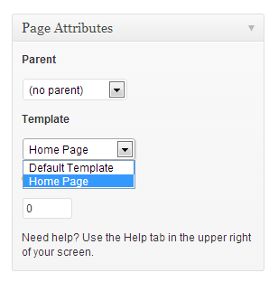

Thank you for purchasing my template. If you have any questions that are beyond the scope of this help file, please feel free to email via my user page contact form here. Thanks so much!
Getting Started with Wordpress
If you want to use About Me home page features you should add a new page and select "home page" as its page template. After that you should go to Settings->Reading and select in the drop-down box this page.
About-WP supports Wordpress custom menu feature.You can create your custom menu at Appearance->Menus.For more information click here
There is a slider section at the left side of the homepage. You can add slider images to this field from Slider menu which is on the left side of your admin panel.
If you want to add Google Analystics code or custom style or script, you can use this section. Also you can hide pages and menu items here.
You can change menu texts. If you don't want to change, leave blank.
If you want to change font types you can use these fields.
To change fonts go to Google Web Fonts page and choose a font type.
Click "Quick-use" button. After that copy the codes (marked on screenshot) and paste them to the template.
Two different font type is used in About Me. First one is used for titles. Second one is used for all other texts.
You can also change font sizes here. "H1,H2,H3,H4,H5,H6" are used for titles. "p" is used for paragraphs and all other texts.
About me design have 4 primary color. You can change all these colors here.
You can edit texts and font-sizes which are on your vcard. Also you can add your social links. If you don't want to use any of them, leave blank.
You can edit your about page texts and info labels here. Info labels are using also in contact page.
You can edit your cv page with a rich text editor. Also you can use resume shortcode for easy styling.
[resume place='Univercity name' time='2008-2010']Your Description[/resume]
If you want to use contact form, you should add your e-mail, name and form subject. You can change all form texts. If you want to add a Google map to your contact page, copy your maps iframe code and paste it to google map link field. If you don't want to use Google Map, leave this field blank.
You can add a footer text.
You can add and edit your portfolio items at portfolio menu which is on the left menu. You can use Wordpress media library to upload your images. After uploading your images, you can find their links in media library via edit links. If you want to add filters you can use portfolio filters section (Theme settings). If you don't want to use any filter leave them blank.
There are 3 types of portfolio item. If you want to add a popup image you should select photo post type. If you want to add a You Tube or a Vimeo video you should select video post type. If you want to add an external link like Themeforest, you should select link post type.
You should add item thumbnails for all post types.
To create a blog page, create a blank page. After that go to Settings->Reading and select in the drop-down box the name of the Page that will now contain your Posts. If you do not select a Page here, your Posts will only be accessible via other navigation features such as category, calendar, or archive links.
After that you can copy and paste your blog page link to Theme Settings->General->Blog page link field.
Body element is used by impress.js to set some useful class names, that will allow you to detect
the support and state of the presentation in CSS or other scripts.
First very useful class name is `impress-not-supported`. This class means, that browser doesn't
support features required by impress.js, so you should apply some fallback styles in your CSS.
It's not necessary to add it manually on this element. If the script detects that browser is not
good enough it will add this class, but keeping it in HTML means that users without JavaScript
will also get fallback styles.
When impress.js script detects that browser supports all required features, this class name will
be removed.
div id="impress" is the wrapper for your presentation steps. In this element all the impress.js magic happens.
It doesn't have to be a div. Only `id` is important here as that's how the script find it.
To change the duration of the transition between slides use `data-transition-duration="2000"` giving it
a number of ms. It defaults to 1000 (1s).
You can also control the perspective with `data-perspective="500"` giving it a number of pixels.
It defaults to 1000. You can set it to 0 if you don't want any 3D effects.
Each step of the presentation should be an element inside the `#impress` with a class name
of `step`. These step elements are positioned, rotated and scaled by impress.js, and
the 'camera' shows them on each step of the presentation.
Positioning information is passed through data attributes. (data-x , data-y , data-z)
The `id` attribute of the step element is used to identify it in the URL, but it's optional.
If it is not defined, it will get a default value of `step-N` where N is a number of slide.
You can also use '#id' in a link, to point directly to this particular step.
We use data-scale attribute for scaling. For example data-scale="4"`, means that this
element will be 4 times larger than the others. From presentation and transitions point of view it means, that it will have to be scaled
down (4 times) to make it back to it's correct size.
We use data-rotation attribute for rotation. For example data-rotate="90"` attribute, meaning that this
element should be rotated by 90 degrees clockwise.
Along with `data-x` and `data-y`, you can define the position on third (Z) axis, with
`data-z`. For example `data-z="-3000"` meaning that element should be
positioned far away from us (by 3000px).
So to make a summary of all the possible attributes used to position presentation steps, we have:
* `data-x`, `data-y`, `data-z` - they define the position of **the center** of step element on
the canvas in pixels; their default value is 0;
* `data-rotate-x`, `data-rotate-y`, 'data-rotate-z`, `data-rotate` - they define the rotation of
the element around given axis in degrees; their default value is 0; `data-rotate` and `data-rotate-z`
are exactly the same;
* `data-scale` - defines the scale of step element; default value is 1
These values are used by impress.js in CSS transformation functions, so for more information consult
CSS transfrom docs: https://developer.mozilla.org/en/CSS/transform
I've used the following scripts and other files as listed.
Once again, thank you so much for purchasing this template. As I said at the beginning, I'd be glad to help you if you have any questions relating to this theme. No guarantees, but I'll do my best to assist. If you have a more general question relating to the themes on ThemeForest, you might consider visiting the forums and asking your question in the "Item Discussion" section.